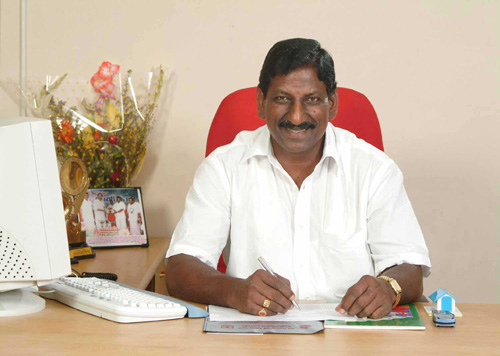

Vision and Mission
Vision:
To be globally recognized for excellence in quality education, innovation and research
for the transformation of lives to serve the society.
Mission:
M1: Quality Education : To provide comprehensive academic system that amalgamates
the cutting edge technologies with best practices.
M2: Research and Innovation : To foster value-based research and innovation in
collaboration with industries and institutions globally for creating intellectuals with new avenues.
M3: Employability and Entrepreneurship : To inculcate the employability and entrepreneurial
skills through value and skill based training.
M4: Ethical Values : To instill deep sense of human values by blending societal righteousness
with academic professionalism for the growth of society.
Messages:
Founder Messages

Our Founder Chairman Shri. N. Kesevan, a philanthropist and visionary,
strongly believes in empowering the society through education. He emphasizes
upon the good quality education at the gross root level, can only transform
the dreams of our nation into a real entity. Also he had a deep concern for
extending excellent services in the health care sector to the rural mass and
even to the untouched vulnerable section of the society thereby achieving
the goal of inclusive growth.We the employees and students of
Sri Manakula Vinayaga Educational Trust are progressing in giving shape to
our Founder’s dream to come true in the near future.